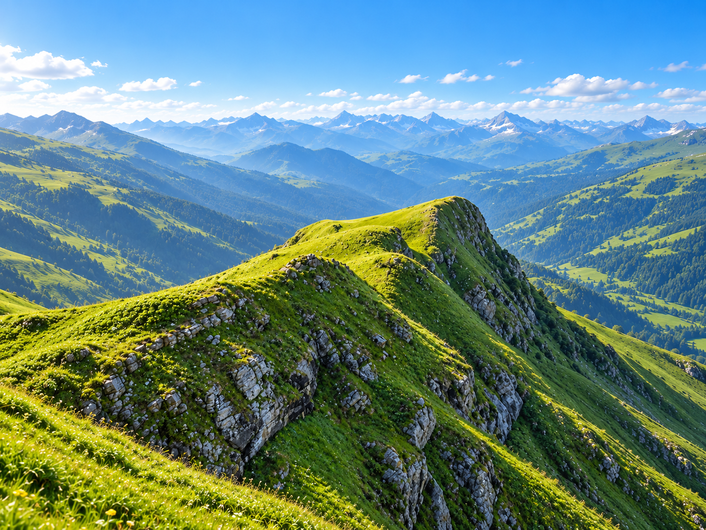
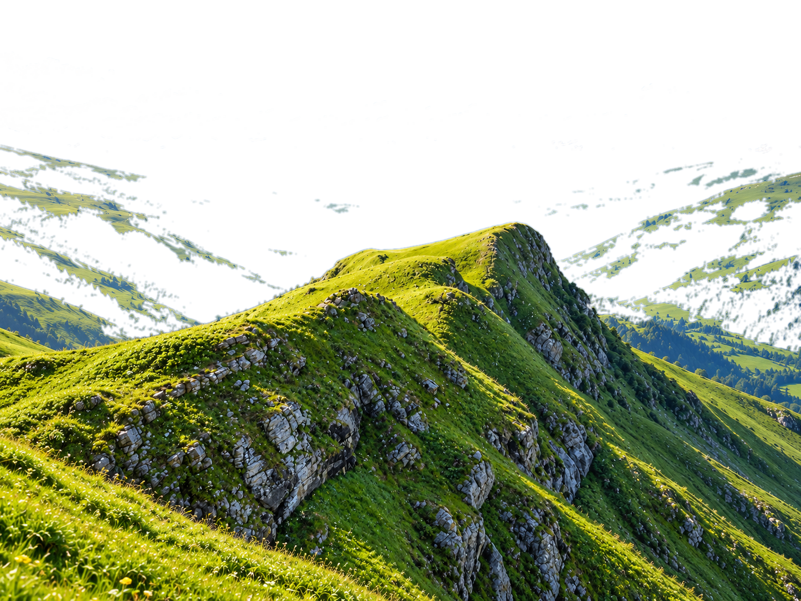

Kurtosis rates every position layer by layer, then manages capital through the Horizon vault using those ratings. When your investors, committee or token holders ask why, you have the answer.
Ratings look through the token to the yield source underneath: the asset, the protocol, how you exit, and what each depends on. Every rating comes with its reasoning and the conditions that would change it.
Layer-by-layer risk attribution · Research preview
Horizon allocates capital on Kurtosis Ratings. Ratings decide what qualifies, how much it holds and when a position is rebalanced or exited, all managed around a defined investment horizon. Holdings, ratings, risk controls and the decision record sit in one place. Every figure in this preview is illustrative.
Ratings explain the decisions. Horizon executes them. Outcomes feed the next rating.
A horizon for your capital.
Horizon is an evergreen vault that runs in cycles. In each cycle, capital moves from floating-rate yield (returns that change with market rates) toward fixed positions (returns locked until a maturity date) that mature around the end of the horizon. Then the vault starts a new cycle or exits.
Begin with eligible floating-rate opportunities while assessing the path toward the target date. Flexibility remains subject to the liquidity of each underlying position.
Capture approved floating yields.
What matters here:Eligibility, concentration, available liquidity, and the sources of return
Decision logic:Allocate only within the mandate and approved position limits.
For teams responsible for evaluating opportunities, allocating capital, and defending those decisions.
01
Asset managers
Put unallocated stablecoins to work without drifting from your fund’s mandate. Bring research and allocation into one repeatable process.
02
Institutional allocators
Know what sits behind each position, from yield source to liquidity, before it reaches your investment committee.
03
Treasuries and DAOs
Allocate reserves with clear exposures and liquidity needs, and an investment case you can put in a governance proposal.
WHY IT MATTERS
03 / CONVICTION
An allocation needs more than a yield.
On-chain opportunities come with layers of exposure. A disciplined process brings the research, reasoning, and risk behind each decision into view.
01
Systematic by design
Every position passes the same assessment before it’s allocated, and the same rules decide when it’s rebalanced or exited.
02
Inspectable at every layer
You see holdings, ratings and the reason behind each material change. Proprietary trading signals stay private.
03
Risk before yield
Liquidity, dependencies and downside are assessed alongside return, from the first decision. A rating makes risk visible; it doesn’t remove it.


THE KURTOSIS PHILOSOPHY
Show the working. Let the evidence build.
We pair position-level research with onchain transparency, so every allocation decision leaves a record you can check. Over time, that record becomes the track record.
Systematic · Inspectable · Accountable to evidence
START A CONVERSATION
Let's talk about your next allocation.
Tell us about your mandate, investment horizon, and the questions you need answered. We'll walk you through the research and explainable vault approach.